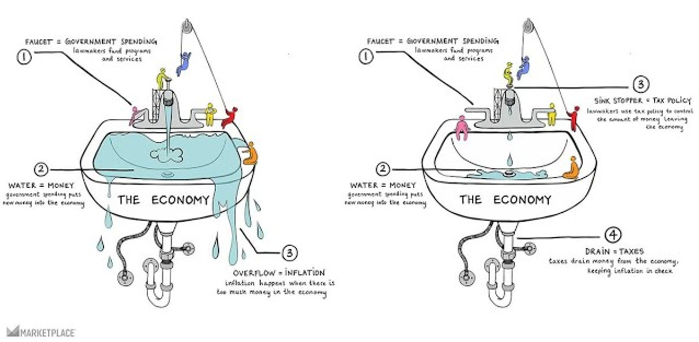
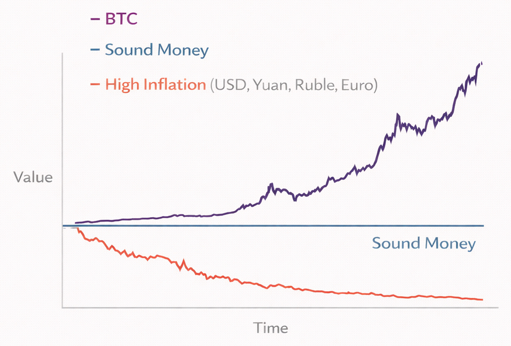
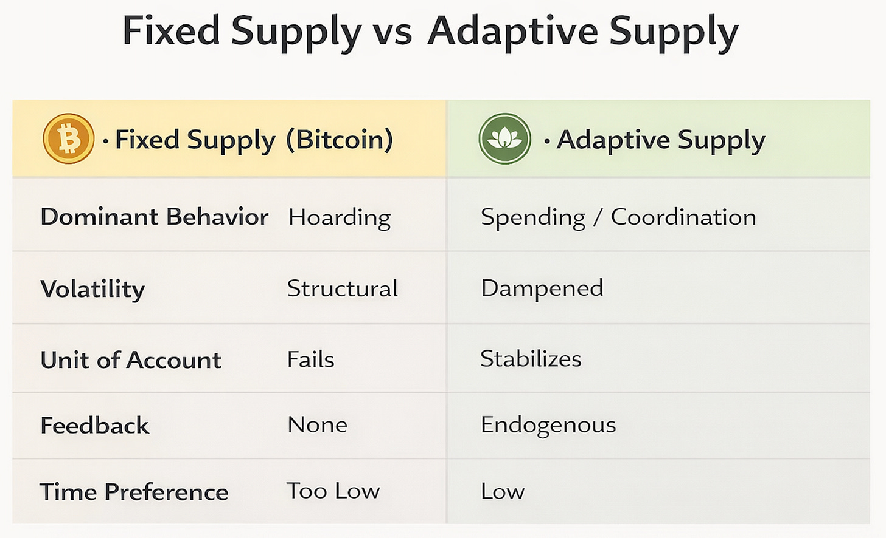
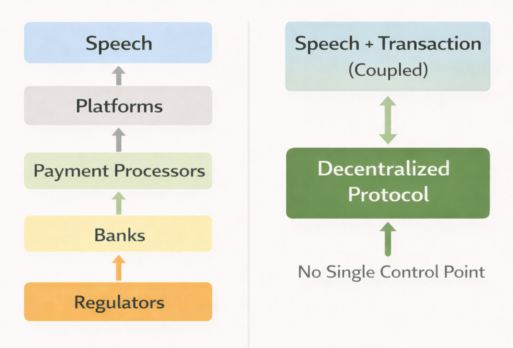
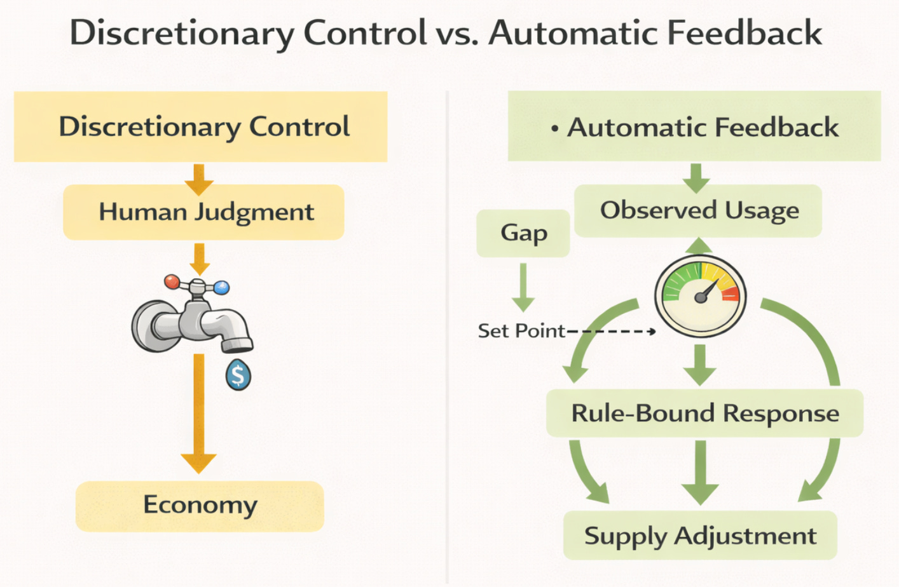

Inflation corrodes time horizons and social trust.
](images/2026-01-18-what-comes-after-bitcoin-3-of-3_06.png)
Parts 1 and Part 2 established the problem, and the attempt at fixing it.
Inflation corrodes time horizons and social trust.
“There is no subtler, no surer means of overturning the existing
basis of society
than to debauch the currency.”
— John Maynard Keynes
Bitcoin proved that monetary rules could be enforced without
institutions — but failed to function as usable money.
Stablecoins restored usability by reintroducing trust, censorship, and
inflation through the back door.

An illustration of “currency” using water
What remains is the unfinished work.
If we want a system that actually lowers time preference — one that people can use, not merely hold — we need to be precise about what such a system must do, and what it must never do.
This is not about ideology.
It is about design constraints.

Value over time of various currency regimes
“You can’t solve a problem on the same level that it was
created.”
— Albert Einstein
Any serious attempt to improve on Bitcoin must satisfy all of the following constraints simultaneously. Failing any one of them reintroduces the same failures under a different name.
Most attempts to stabilize crypto anchor value to something external:
fiat pegs
price oracles
reserve baskets
committees
Each of these recreates centralized trust. When the anchor fails, the system fails with it. When discretion enters, political pressure inevitably follows.
A viable system must stabilize purchasing power endogenously — through rule-bound feedback tied to actual network use.
Not “what should this be worth?”
But “what is being used, right now?”
Stability must emerge from behavior, not belief.
“In the absence of the gold standard, there is no way to protect
savings from confiscation through inflation.”
— Alan Greenspan (1966)
Bitcoin’s fixed supply makes it an excellent speculative asset — and a poor currency.
When money is expected to appreciate simply by existing, rational actors delay spending. Economic activity shifts from coordination to hoarding. Volatility becomes structural. Unit-of-account failure is inevitable.
A functional currency must reward use, not mere possession.
If money does not move, it does not create coordination.

Table comparing token economics of Bitcoin and a potential successor
“Show me the incentive and I’ll show you the outcome.”— Charlie Munger
Bitcoin has no internal mechanism that ties issuance and destruction to real economic activity. Value enters through exchanges, not utility. As a result, Bitcoin never escapes being priced in fiat. All attempts at creating Bitcoin-native economies have ultimately failed.
A post-Bitcoin system requires a closed loop:
issuance responds to demand
circulation enables coordination
value exits the system through native use
use cases that can be prices in the native token itself
Without a redemption loop, stability is impossible. With one, speculation becomes secondary to function.
In other words, value must primarily enter and exit the system through native use, not external speculation.
“There are no solutions. There are only trade-offs.”
— Thomas Sowell
Stability alone is insufficient.
A currency that depends on utility which can be denied by banks, platforms, or regulators has not escaped institutional control — it has merely delayed it.
We have already seen how this plays out:
payment processors terminating lawful businesses
banks closing accounts based on associations or speech
platforms erasing livelihoods overnight
“The power to tax is the power to destroy.”
— John Marshall
Control does not require devaluing money if you can prevent people from using it.
Therefore, the utility anchoring the currency must have no off-switch.
It must be:
essential enough that demand persists under pressure
decentralized enough that no administrator can be coerced
integrated deeply enough that attacking it means attacking critical internet infrastructure
Only one category of utility reliably meets these constraints.
Communication and coordination are not optional features of society. They are prerequisites for everything else.
People must speak.
They must organize.
They must transact.
“Whoever controls the means of communication controls the
society.”
— Attributed to Marshall McLuhan
When communication is mediated through centralized platforms, censorship is easy. When money is mediated through centralized rails, exclusion is trivial.
But when money and communication are intertwined — when transactions enable speech, and speech requires transactions — enforcement costs rise dramatically.

Traditional communication stack vs Proposed
Not impossible to attack.
But impossible to finish attacking.
This is not about evading the law. It is about designing systems where power is constrained by architecture rather than selectively applied discretion. It is about building systems where enforcement requires dismantling the system itself — where power is constrained by architecture rather than promises.
“Code is law.”
— Lawrence Lessig
That demand already exists. It is structural, not ideological. And it is growing as financial and speech controls become baseline compliance rather than exceptional measures.
Finally, speech has value — but no marginal cost, and no supply chain. This enables pricing it in native units rather than government currency.
Bitcoin proved that monetary rules could be enforced by code. What it failed to solve was feedback.
A post-Bitcoin system must adjust supply based on actual use, not external price signals.

Discretionary control vs Automatic feedback
Adaptive issuance does exactly this.
Supply expands when real demand grows.
Supply contracts when usage falls.
Think of it like a thermostat adjusting heat based on temperature — not a committee voting on comfort.
This is not algorithmic stablecoins revisited.
There is no peg to defend.
No promise to break.
Just rule-bound response to observable activity.
“The purpose of a system is what it does.”
— W. Edwards Deming
Lotus was my first attempt to implement these constraints.
Built on a forked Bitcoin Cash codebase, it combined:
adaptive issuance driven by Proof-of-Work economics
token burns tied to native utility
a genuine closed loop between use and supply
It worked — technically.
What failed was bootstrapping.
We were under-resourced. We avoided token sales to reduce SEC and FinCEN risk. Communication overhead consumed development time. The update schedule was too tight and added friction. Utility was fragmented, making network effects difficult to achieve. User retention suffered due to lack of notifications in the software. External shocks — pandemic money printing, tightening cycles, mass layoffs, and natural disasters — compressed runway.
These were not design failures.
They were execution lessons.
The core mechanisms behaved as expected under real usage; what failed was our ability to sustain momentum long enough for network effects to compound.
“Plans are worthless, but planning is everything.”
— Dwight D. Eisenhower
The constraints remain the same. The execution changes.
Lotus v2 retains:
adaptive issuance
utility-based burns
closed-loop economics
But improves on v1 by:
front-loaded, Bitcoin-style distribution while leaving adaptive tail emissions
adding necessary features for user retention
no permanent developer tax
no insider allocations
community-driven funding and governance
dramatically lower development and coordination costs enabled by modern tooling and AI
The initial utility focus is narrow and disciplined:
uncensorable messaging and coordination, with burns for
attention, priority, and reach.
Once established, the system should require minimal ongoing intervention.
This is not a promise of moon prices.
It is a proposal for a monetary and coordination system that is boring, stable, and hard to kill.
“Perfection is achieved, not when there is nothing more to add,
but when there is nothing left to take away.”
— Antoine de Saint-Exupéry
Not revolution.
Not mass adoption overnight.
Success is a system that:
holds purchasing power across time
enables coordination without permission
cannot be selectively shut down
competes peacefully by working better
If it works, it will not need persuasion.
People will use it because it solves real problems.
This work is not venture-scale, and it is not speculative.
It is independent systems research and engineering aimed at solving problems most institutions are structurally unable to touch. To do it properly, I need the freedom to work full-time without bending incentives toward hype, token sales, or ideological conformity.
What that requires is not millions of users.
It requires support.
To continue this work full-time, I need roughly $150k–$200k per year in funding. That can come from a small number of patrons, a broader base of modest supporters, or some combination of both.
If you are someone who:
funds long-horizon technical or civilizational work,
believes monetary and coordination systems shape society downstream,
or understands the value of backing people rather than platforms,
Your support would make a direct and material difference. For example, a single patron covering six months of runway meaningfully reduces coordination overhead and allows uninterrupted work on protocol design, implementation, and testing.
There is no token pre-sale.
No venture capital.
No insider allocation.
No promise of returns.
This is not an investment pitch.
It is an invitation to help sustain independent work on a problem that will not be solved by markets, committees, or slogans — but may be solved by careful design, iteration, and time.
If you are interested in supporting this work at a patron level, or know someone who might be, I would be grateful for a private introduction or message.
For everyone else, paid subscriptions help provide stability and signal that this work is worth continuing — even if you never donate more than a few dollars.
Both forms of support matter. They simply serve different roles.
“The future is already here — it’s just not evenly
distributed.”
— William Gibson
Ideas like this do not spread through advertising or virality.
They spread through trusted networks.
Most people who can meaningfully support long-horizon work are not browsing crypto feeds or chasing trends. They are reading quietly, thinking carefully, and relying on recommendations from people they respect.
If this essay resonated with you, sharing it is not about amplification — it is about routing.
It only needs to reach a small number of people who:
think seriously about systems and incentives,
understand that stability and coordination are design problems,
and are willing to support work that competes peacefully rather than disrupts loudly.
History is shaped less by mass movements than by small groups of people who recognize problems early and choose to act before failure becomes unavoidable.
If you know someone who fits that description, please share this with them.
Awareness is the first step.
Coordination is the second.
The rest follows from design.
“Small groups of thoughtful, committed citizens can change the
world.
Indeed, it’s the only thing that ever has.”
— Margaret Mead